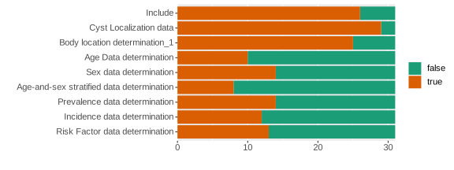
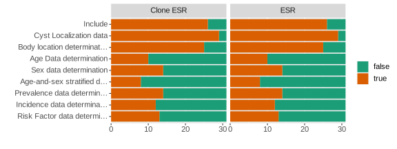

Document reviews can eat a lot of time and often involve redundant work. Sysrev and rsr can help avoid duplicate work in document review.
This demo of reusability uses a sysrev of the parasitic disease Echinococcosis (ESR). ESR reviewed 31 articles and assigned values to 9 boolean labels. Sysrev provides a few methods for re-using article, labels and answers. Let’s get started by pulling down the data from ESR and visualizing it:
ESR.pid = 111200 # ESR id is 111200
# tibbles for articles, answers and lbls
ESR.art = get_articles(ESR.pid)# 31 × 11
ESR.ans = get_answers(ESR.pid) # 279 x 8
ESR.lbl = get_labels(ESR.pid) # 9 x 15
Copying answers with code
Some methods require sysrev technical support
ESR articles and labels can be copied into a new project through cloning, and previous answers can be assigned through rsr::review or rsr::copy_answers. Below the ESR project is cloned into “Clone ESR” and some tests are run to confirm that the clone worked:
# clone ESR
CPY = clone_sysrev(ESR.pid,"Clone ESR")
# get cloned lbls & articles tibbles
CPY.lbl = get_labels(CPY$pid) # 9 x 15
CPY.art = get_articles(CPY$pid) # 31 x 11article_data_id (adid) is a shared article id. Since CPY is an ESR clone, it has the same adids:
# Test if all ESR articles in the clone
setequal(ESR.art$article_data_id,
CPY.art$article_data_id)
#> [1] TRUEglobal_label_id (glid) is a shared label id. Since CPY is an ESR clone, it has the same glids:
# Test if all ESR labels in clone
setequal(ESR.lbl$global_label_id,
CPY.lbl$global_label_id)
#> [1] TRUErsr::copy_answers copies answers between projects with shared adids/glids:
copy_answers(source.pid = ESR.pid,
target.pid = CPY$pid)After copying, a quick plot shows identical answers in the source and clone:

Copying answers on sysrev.com
Final code from the video is below:
ESR.pid = 111200
CLN.pid = 115689
# look at source answers
get_answers(ESR.pid)
# look at source labels
ESR.lbl = get_labels(ESR.pid) |>
arrange(project_ordering) |>
select(short_label,global_label_id)
# look at clone labels
CLN.lbl = get_labels(CLN.pid) |>
arrange(project_ordering) |>
select(short_label,global_label_id)
# look at source adids
ESR.art = get_articles(ESR.pid) |>
select(aid,article_data_id)
# look at clone adids
CLN.art = get_articles(CLN.pid) |>
select(aid,article_data_id)
# copy answers source -> clone
copy_answers(ESR.pid,CLN.pid)
# get project w/ one imported label
IMP.pid = 115697
IMP.lbl = rsr::get_labels(IMP.pid) |>
arrange(project_ordering) |>
select(short_label,global_label_id)
# copy answers from source to import
copy_answers(source.pid = ESR.pid,
target.pid = IMP.pid)